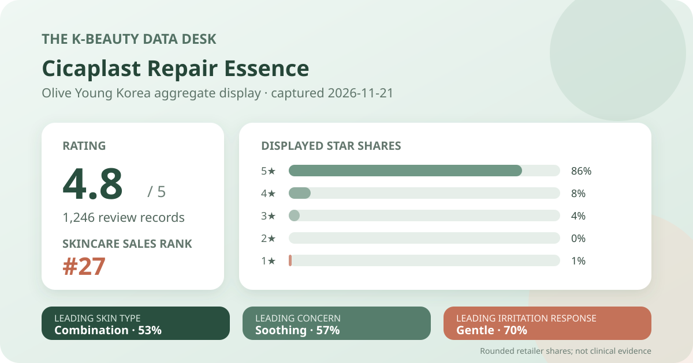
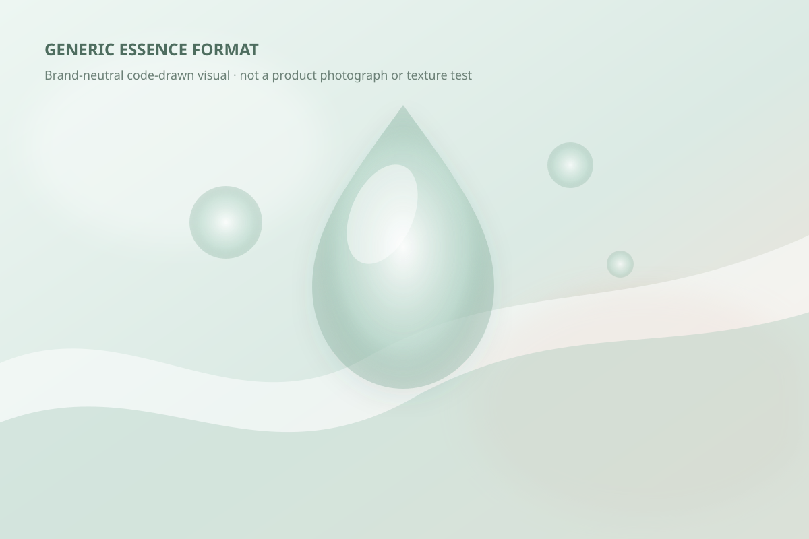

Data captured November 21, 2026. Olive Young Korea displayed “라로슈포제 시카플라스트 리페어 에센스 30ml 기획 (+7.5ml*2ea).” This article uses “La Roche-Posay Cicaplast Repair Essence” as a concise English label. It relies only on the live ranking, product identity, aggregate rating, displayed star shares, shopper polls, and a retailer-generated anonymous summary. It does not copy or translate individual reviews, names, profiles, or photographs, and it makes no claim of firsthand use.

The short version: La Roche-Posay Cicaplast Repair Essence appeared at number 27 in the captured skincare sales ranking. The ranking and detail titles agreed, while the product header and official review view both showed 4.8 out of 5 from 1,246 records. Five-star ratings represented 86% of the displayed distribution. Combination skin led the skin-type poll at 53%, soothing led the concern panel at 57%, and gentle led the irritation panel at 70%. These are favorable storefront signals, not proof that the essence repairs, calms, hydrates, or suits a particular person.
The official display showed 4.8 stars from 1,246 review records. That is a meaningful volume for describing the current storefront signal: the average is high, and the distribution is concentrated at the top. It is still observational retail feedback. It cannot isolate the product from the expectations, prices, gifts, routines, climates, and packaging experiences attached to each record.
The listing was a promotional plan built around a 30 ml essence with two 7.5 ml additions. Records accumulated under the listing may not all represent the same price or bundle moment. The interface also did not expose a verified-buyer denominator, raw rating counts, or a method for separating comments about the formula from comments about shipping, value, or presentation.
The defensible conclusion is therefore narrow: the captured listing had a strongly favorable aggregate rating across 1,246 records. That does not establish a biological repair effect, quantify a change in redness or hydration, or show superiority over another essence.
The official rows showed 86% five-star, 8% four-star, 4% three-star, 0% two-star, and 1% one-star. The rounded shares total 99%, a normal consequence of independently rounded interface values. The pattern is consistent with the 4.8 average, but it should not be reverse-engineered into exact counts.
A displayed zero can conceal a very small underlying share after rounding, while the one-star row confirms that the feedback was not unanimous. The distribution describes satisfaction labels, not the reasons behind them. It cannot tell us how many people changed routines, used the essence for a particular duration, or compared it with a consistent control.
The displayed skin-type responses were 53% combination, 39% dry, and 8% oily. The rows total 100%. Combination skin was the largest represented label, but this is sample composition rather than a product-fit score. A person selecting “combination” may also have seasonal dryness, localized oiliness, temporary irritation, or an evolving routine.
The platform did not disclose the poll denominator, so the response base may be smaller than the 1,246 rating records. It also did not show a matched outcome by skin type. The percentages cannot support a claim that combination skin benefits more, or that dry or oily skin should avoid the product.
The concern panel displayed 57% soothing, 40% moisture, and 3% wrinkle or brightening. The rows total 100%. The first two labels indicate what dominated the retailer's shopper prompt; they do not measure redness, hydration, barrier function, wrinkles, or pigmentation.
No colorimeter, corneometer, transepidermal-water-loss reading, baseline, comparator, application schedule, or follow-up interval was part of the capture. The 57% soothing share therefore cannot be read as a 57% calming rate, and the 40% moisture share is not a 40% increase in skin water content.
The irritation panel showed 70% gentle, 27% ordinary, and 3% felt irritation. These rows total 100%. The leading response is positive, while nearly one-third of the displayed responses were outside the “gentle” label. That makes the aggregate more useful as context than as a guarantee.
A retailer poll cannot screen for allergy, fragrance sensitivity, active dermatitis, prescription use, a compromised barrier, or interactions with exfoliants, retinoids, acne treatments, sunscreen, and makeup. Anyone with known sensitivities should examine the current regional ingredient disclosure and make an individual testing decision.
The retailer labeled 84% of an undisclosed recent-review subset as positive. Its anonymous automated summary grouped broad discussion around calming or redness impressions, a light-feeling application and absorption experience, and moisture or reduced tight-feeling impressions. These are retailer-generated aggregate themes, not quotes and not independent findings.
The interface did not disclose how many recent records entered the summary, how positive and negative labels were assigned, whether one record could contribute to multiple themes, or how representative that subset was of all 1,246 records. The themes are useful for identifying recurring discussion areas, but not for establishing frequency across all buyers or confirming an effect.

“Cicaplast Repair Essence” is the retailer-displayed product name. In general skincare language, an essence is usually a leave-on step used after cleansing and before thicker creams, but that convention does not define viscosity, spread, absorption, residue, scent, finish, or compatibility with another product. “Repair” in a name is not an instrument endpoint or a medical claim.
I did not open, dispense, spread, layer, or wear the essence. The local visual uses abstract translucent shapes to communicate a generic fluid leave-on format without reproducing the bottle, liquid color, or a real swatch. Actual sensory behavior depends on the current formula, amount, application method, skin condition, temperature, humidity, and surrounding routine.
The captured product title did not provide a verified ingredient concentration, and this analysis did not independently audit the current formula. A family name such as “Cicaplast” cannot reveal which ingredients drive the finished product, their amounts, stability, delivery, or contribution to user experience. I therefore do not estimate any active level or infer a mechanism from the name.
Readers seeking current ingredient, allergen, fragrance, or regional-formula details should consult the package and the brand's current disclosure. Formula and labeling can change independently of accumulated review records, and the Korean promotional listing may not match every regional configuration.
Rank 27 describes one capture of Olive Young Korea's skincare sales list. It is not a clinical ranking or a claim that this is the twenty-seventh best treatment. Advertising, inventory, discounting, gifts, influencer exposure, seasonality, and short-term demand can move a listing rapidly.
The captured page showed a 30 ml essence plan with two 7.5 ml additions, a ₩55,000 reference price, and a ₩36,500 promotional price. Those details can change separately from the review aggregates. Before purchase, confirm the current seller, formula, volume, bundle contents, stock, expiry information, return terms, and checkout price on the live listing.
The captured official display showed 4.8 out of 5 from 1,246 records. Displayed star shares were 86% five-star, 8% four-star, 4% three-star, 0% two-star, and 1% one-star; the rounded rows total 99%.
Combination skin led at 53%, followed by dry at 39% and oily at 8%. These shares describe the displayed response sample and do not prove suitability.
No. The 57% figure is a retailer-displayed shopper-poll label, not an instrument measurement, controlled comparison, or quantified treatment result.
No. The 70% aggregate cannot predict allergy, sensitivity, routine interactions, or an individual's response. The display also showed 27% ordinary and 3% felt irritation.
No. This article analyzes retailer-displayed aggregates only and uses brand-neutral vector artwork rather than a product or user photograph.
Source: Olive Young Korea product listing and official aggregate review statistics, captured November 21, 2026. Open the source product page.
Published by The K-Beauty Data Desk. The source does not independently verify every buyer's identity, and this page is an editorial analysis of retailer-displayed aggregates—not medical advice or a substitute for the current product label.
← All reviews · Review-volume rankings · Skin-poll explorer · Methodology